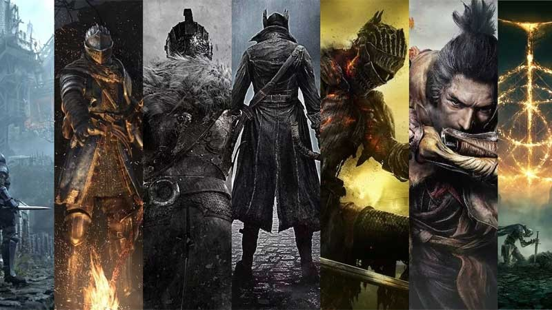
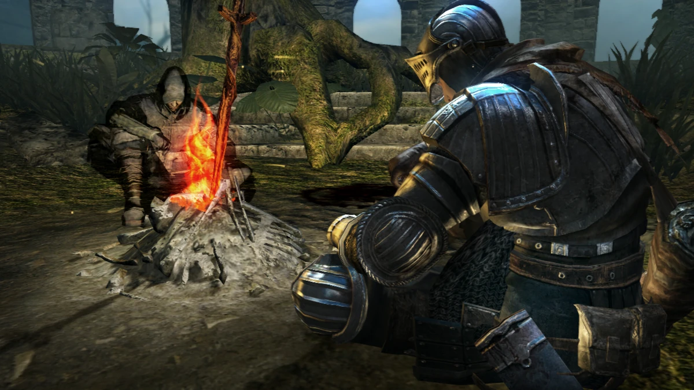
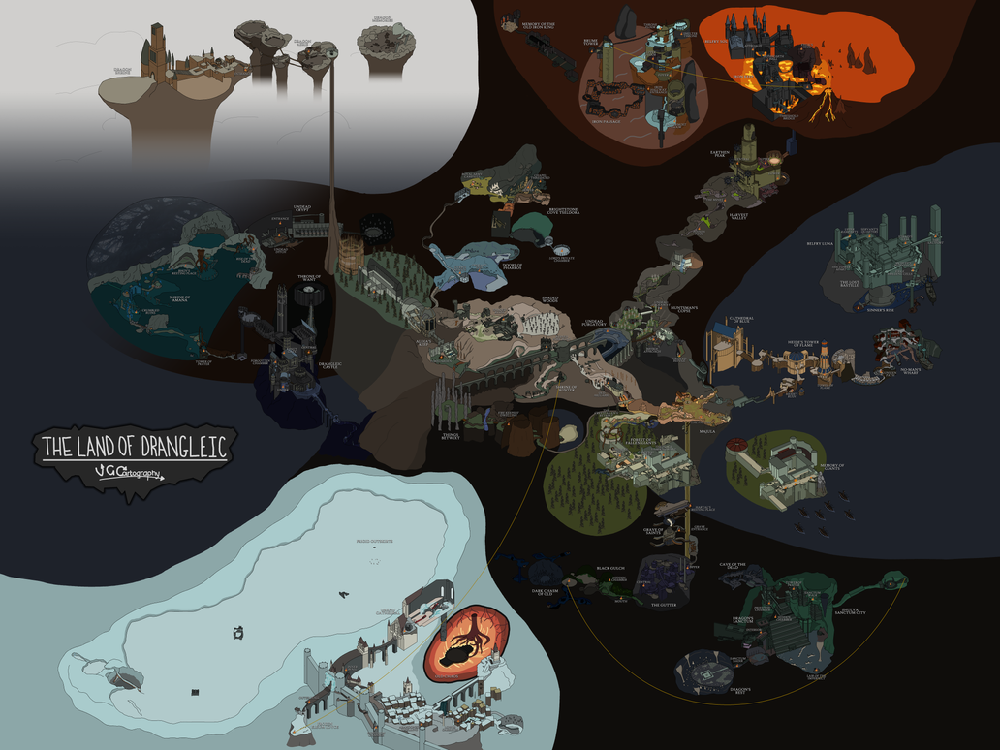
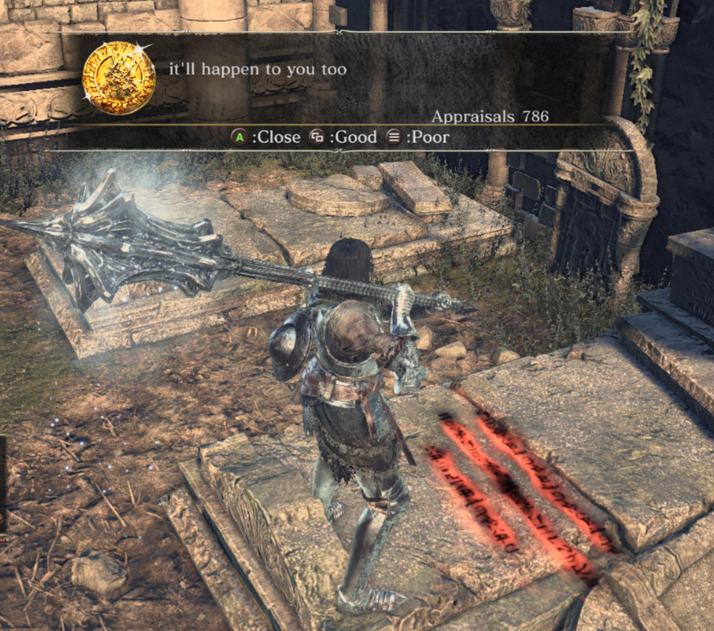

Soulsborne games are a subgenre of Action Role-Playing Games. The earliest game in this genre was "Demon's Souls", released by FromSoftware in 2009, followed by "Dark Souls", which further popularized the "Soulsborne games" genre. The core concepts of Soulsborne games are high difficulty, growth through failure, few save points, fragmented narrative, and sandbox-like map design. However, these designs are not simply meant to punish the player; rather, the player character's repeated deaths can be considered an important part of the game, as this allows for a significant sense of accomplishment upon success.



Campfires are crucial in Soulsborne games, typically serving as respawn points, leveling points, and teleportation anchors. This design prevents players from wasting too much time exploring previously discovered areas due to frequent deaths.
However, sometimes there aren't many bonfire, which is when shortcuts become very useful. Thanks to the "miniature map design" of Soulsborne games, players often discover a shortcut that leads directly to the previous bonfire after exploring a long distance. Undoubtedly, this is a very exciting thing during gameplay.
"Player Messages" is a very interesting design. It allows players to leave messages on the map, such as warnings about unknown dangers ahead, the presence of treasure, or directions. But, sometimes people also lie!